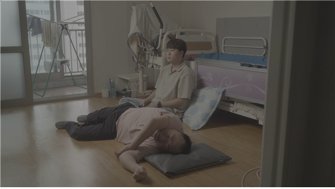

매거진 삼삼오오 · 연재
대구독립영화 비평 시리즈 - 책임지지 않는 우정, <새>

오오극장은 대구 유일의 독립영화전용관으로 대구독립영화 아카이빙을 위한 작업을 꾸준히 진행하고 있습니다.
매년 <대구독립영화 연말정산>기획전과 책자 『오오카이브』를 통해 대구독립영화를 상영하고 기록합니다.
이제 물리적 아카이빙에 더해 대구독립영화 한 작품 한 작품을 자세히 들여다보는 시간을 갖고자 합니다.
대구영화발굴단 류승원님의 대구독립영화 비평 시리즈!
세 번째 작품은 제25회 대구단편영화제 애플시네마 우수상 수상작, 김운영 감독의 <새>입니다.
<새>는 오오극장 <대구독립영화 연말정산>에서 만나보실 수 있습니다.
책임지지 않는 우정, <새>
대구영화발굴단 류승원
김운영 감독의 개인 유튜브 채널에 <우성의 골목>이라는 제목의 영상이 하나 있다. 쓰레기 더미가 놓여있는 어느 골목의 이미지, 비가 내리고 있고 자동차들이 종종 지나간다. 어두운 밤부터 해가 뜨고 난 이후까지 영상은 골목을 집요하게 보여준다. 아침이 되자 트럭이 하나 들어와 멈추고, 한 사람이 내려 폐지를 줍는다. 어떠한 심정으로, 무엇을 의도하고 찍었을지 짐작하기 어려운 <우성의 골목>의 한 장면. <새>의 오프닝은 여기서 가져온 비-내러티브적 이미지이다. 이후 트럭이 사라지면 <새>는 타이틀로 전환이 되고, <우성의 골목>에는 새 한 마리가 어디선가 출현한다.
(영화의 서사가 시작되면) 우성은 집을 나서며 문 앞에 내놓은 쓰레기를 챙긴다. 장애인 활동지원을 하며 만났지만, 현재는 곁을 떠난 정현을 만나러 가는 길이다. 오프닝에 나왔던 골목을 경유하여 쓰레기를 버리고, 버스를 타러 가는 길에 우성은 죽은 새를 발견한다. 그는 죽은 새를 그냥 지나치지 못한다. 우성은 다시 골목으로 되돌아가 자신이 버렸던 쓰레기에서 신문지를 꺼내 새의 사체를 감싼다.
우성이 발견한 죽은 새는 <우성의 골목>에서 나온 새와 닮았다. 당연하게도 외형이 닮았다고 한들 <우성의 골목>에서의 새와, <새>의 죽은 새를 동일한 개체라고 여길 수 없다. <새>와 <우성의 골목>은 다른 세계이기 때문이다. 그러나 <우성의 골목>을 본 이들이라면 <새>의 죽은 새를 보며 다른 세계(<우성의 골목>)에서 종종거리며 걸어가던 새의 모습을 상상하지 않기 힘들 것이다. ‘골목을 거닐던 새가 모종의 이유로 죽어있다.’ 두 세계가 하나의 세계로 연결된 것 같은 느낌, <새>에는 현실(<우성의 골목>)의 이미지가 존재하지만, 동시에 그것을 다시 허구(<새>)로 활용된다. <새>가 가지고 오는 건 <우성의 골목>의 사적인 감각인 것이다.
다큐멘터리를 극으로, 비-내러티브적 이미지를 내러티브적 이미지로 재활용하며 <새>는 사적인 세계를 허구로 편입시킨 뒤 우성을 정현에게 인도한다. 버스를 탄 우성의 마음은 편치 않다. 죽은 새가 신경 쓰이기 때문이다. 버스를 스쳐 가는 풍경 속 건물들의 높이가 점점 낮아지는 동안 우성은 새의 사체를 꽉 쥐고 있다. 갈아탈 버스를 기다릴 동안 우성은 죽은 새를 묻어줄 곳을 찾는다. 쓰레기봉투 가 눈에 띄는 어느 인조 뜰, 풀들을 파헤치던 우성은 버스가 오자 새의 사체를 급히 방기하고 떠난다.

오랜만의 만남에도 불구하고 우성과 정현의 모습은 어딘가 일상적이다. (활동지원사가 있음에도) 우성은 정현의 밥을 준비한다. 또한 함께 밥을 먹는 동안 정현은 계속 우성의 안부를 묻는다. 반면 우성은 자신에 대한 정현의 관심을 농담을 하며 무마한다. 정현에 대한 우성의 소극적인 태도로 인해 두 사람 사이엔 그다지 큰 사건은 일어나지 않는다. 어떠한 감정적으로 내밀한 교류도 마찬가지다. 이러한 정현의 태도는 활동지원사였을 적 직업상의 (일정 거리를 두는) 직업윤리에서 비롯된 것일 수도 있지만, 우성은 정현을 어느 선에서 계속 밀어낸다는 인상을 준다.
실제 우성은 정현의 활동지원사였고, 지금은 그만둔 상태다. (2024년 올해 열린 대구단편영화제의 GV에서 정현은 우성이 자신을 떠났을 때 무척 힘들었다고 고백하기도 했다.) <새>를 보고 가장 인상에 남는 건 우성과 정현의 우정일 것이다. (현실에서) 우성과 정현이 함께 쌓은 역사적 순간들은 (우성의 소극적 태도에도 불구하고) 반나절의 짧은 영화 속 두 사람의 시간을 풍부하게 만든다.
이러한 ‘우정’에 관한 지점은 <새>와 함께 만들어진 공연 <환여 추억 여행>(이성직 기획)에서도 나타난다-<새>는 (영화 자체만으로 존재하는) 여타의 작업과는 달리 공연이라는 다른 매체와 공동 창작된 작품이다. 공연 <환여 추억 여행>의 소개란을 보면 ‘창작진의 오랜 추억이었던 환여동의 풍경을 달라진 시대의 감각으로 재구성’한다고 쓰여있다. 실제로 감독 김운영과 이성직이 함께 살았던 포항시 북구 환여동에 성직이 다시 찾아오며 옛 시절에 대한 추억을 공유하는 게 목적인 것이다. <환여 추억 여행>에서 관객은 환여동의 바닷가를 중심으로 랜드 마크가 되는 몇 군데의 장소들을 직접 탐방한다. 하나의 장소에 도착하면 이제는 달라져 버린 공간이 지닌 추억 속 숨겨진 이야기를 알게 된다. 그러니까 <환여 추억 여행>은 변해버린 공간적 특성을 사적인 우정을 통해 환기하려는 공연이다.
반면 <새>는 <환여 추억 여행>과는 결을 달리한다. 먼저 적극적으로 환여동의 공간적 특성을 드러내는 <환여 추억 여행>과 달리 <새>는 우성의 집에서 정현의 집으로 가는 길 외에 아무것도 비추지 않는다-<새>에선 바다가 등장하지 않는다. <새>는 환여동을 우성의 집에서 정현의 집으로 가는 공간으로 재구축한다. 또한 성직이 운영을 찾아와 적극적으로 추억을 상기하는 <환여 추억 여행>과 달리 <새>에서 우성은 정현과의 추억을 무마한다-심지어 헤어지기 전 우성과 정현이 함께하는 마지막 쇼트는 낮잠을 자는 모습이다. 우성은 정현과의 만남을 ‘일상’적으로 마무리한 뒤 떠나 자신이 방기한 새를 찾는다. 그러나 새는 이미 거기에 없다. 어찌할지 모른 채 고민에 빠진 사이 버스가 온다.

<환여 추억 여행>의 소개란에는 ‘책임’이라는 단어가 쓰여있다. 떠난 자(이성직)는 오랜만에 돌아와 변해버린(혹은 남아있는) 것을 어떻게 책임질지 생각한다. <새>는 여기서도 <환여 추억 여행>과 다른 방향을 택한다. 우성(떠난 자)은 정현(남은 자)을 책임지지 못한다. 책임지지 못하기에 우성은 정현에게 계속 거리를 둔다. 우성이 정현과 함께하는 순간에 비해, 정현에게서 떠나는 장면이 유독 길다. 돌아가는 버스 안에서 어쩌면 우성은 정현을 생각하고 있는지도 모른다. 그러나 우성은 이미 자신의 친구와 멀어지고 있다.